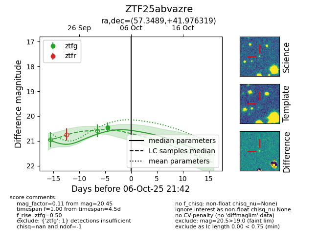
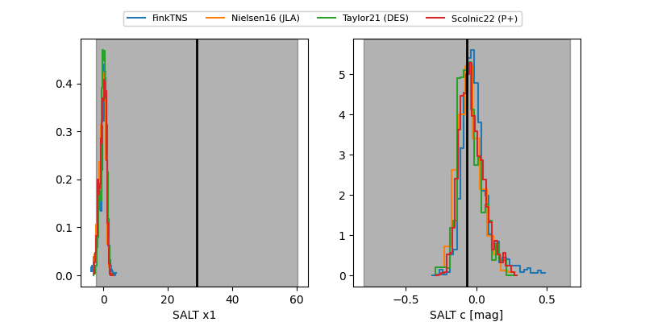

FINK: ZTF25abvazre
Lasair: ZTF25abvazre
ALeRCE: ZTF25abvazre
ZTF25abvazre (ztf,fink)
equatorial (ra, dec) = (57.3489,+41.97632)
galactic (l, b) = (154.8290,-9.61491)


last ztfg=20.45
1 ztfg detections